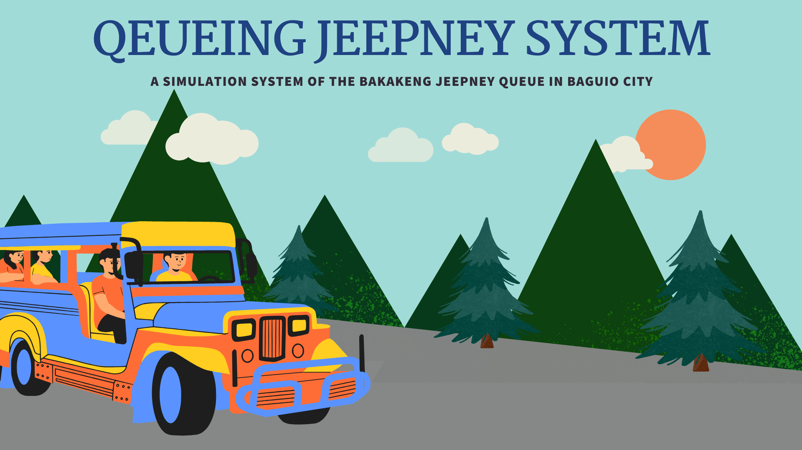

A Simulation System of the Bakakeng Jeepney Queue in Baguio City
in SLU Maryheights Campus, Bakakeng Norte/Sur, Baguio City

Public transportation is a vital service in urban areas, ensuring affordable and efficient mobility. In the Philippines, jeepneys are the most recognized form of public transportation, providing essential services between urban centers and remote locations. In Baguio City, jeepneys and taxis dominate public transport options, with jeepneys being the more economical choice. However, challenges such as jeepney shortages during peak hours, long passenger queues, and delays in arrival and departure create inefficiencies. Addressing these issues is essential to improving the transportation experience for passengers and optimizing the operations of jeepney services.
Problem Statement
Passengers traveling between SLU Maryheights Campus (Bakakeng Norte/Sur) and Igorot Park experience significant delays during peak hours, resulting in:
- Extended waiting times in queues.
- Delays in jeepney arrivals and departures.
- Congestion at terminals.
Objective
The primary objective of this study is to enhance the efficiency of the jeepney transport system by:
- Identifying bottlenecks and inefficiencies.
- Developing a simulation model using Arena Simulation Software.
- Proposing and evaluating solutions to reduce waiting times and improve system performance.
Methods
- Data Collection
- Passenger arrival and interarrival times.
- Jeepney arrival and departure times.
- Waiting times in queues and inside jeepneys.
- Travel times between SLU Maryheights and Igorot Park.
- Data Processing
- Organized data using Excel for easy analysis.
- Removed outliers to ensure the accuracy of insights.
- Data Analysis
- Descriptive statistics such as mean, median, mode, and standard deviation were used.
- Arena’s Input Analyzer was utilized to determine the best probability distribution for modeling system components.
- Model Development
- Designed a simulation model in Arena to replicate the jeepney transport system.
- Incorporated realistic constraints such as jeepney capacity (22 passengers) and travel times.
- Simulated passenger behavior, queue dynamics, and jeepney dispatch.
Current System Overview
Process Flow:
- Passengers arrive at terminals and join a queue if seats are unavailable.
- Jeepneys follow a First-In-First-Out (FIFO) boarding system.
- Once a jeepney fills to capacity, it departs for its destination.
- Passengers disembark upon reaching their destination.
Challenges Identified:
- Congestion: Long queues during peak hours.
- Delays: Extended waiting times for jeepney arrivals and departures.
- Limited Capacity: Jeepneys can accommodate only 22 passengers.
Proposed Systems
- Proposed System 1: Controlled Scheduling
- Jeepney schedules are aligned with student dismissal times from SLU Maryheights Campus.
- Impact:
- Reduced average waiting time in line to 3.83 minutes (from 14.21 minutes).
- Improved passenger flow and system efficiency.
- Proposed System 2: Increased Jeepney Capacity
- Jeepneys are modified to accommodate more passengers.
- Impact:
- Reduced waiting time for jeepneys to fill by 4.45 minutes.
- However, average waiting time in line increased by 6.81 minutes due to fewer jeepneys arriving.
Results
- Proposed System 1: Controlled Scheduling
- System Components:
- Entities:
- Passengers: Defined by arrival times, waiting times, and destinations.
- Jeepneys: Defined by capacity, travel times, and routes.
- Processes:
- Passenger arrival, queue management, and jeepney dispatch.
- Performance Metrics:
- Reduced average waiting time in line to 3.83 minutes (from 14.21 minutes).
- Improved passenger flow and system efficiency.
- Proposed System 2: Increased Jeepney Capacity
- Current system’s average queue waiting time: 14.21 minutes.
- Proposed System 1’s average queue waiting time: 3.83 minutes.
Simulation Outcomes:
Conclusion:
Proposed System 1 (Controlled Scheduling) demonstrates significant improvement in reducing congestion and wait times, making it the most effective solution. However, external factors such as traffic and intermediate loading/unloading remain limitations.